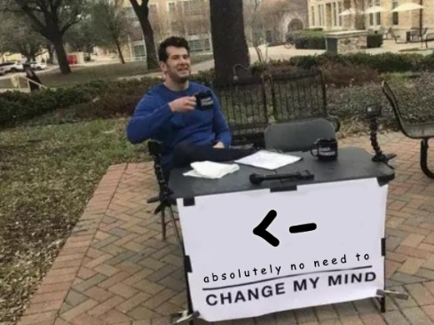

appraise_assignment <- function(file, destroy = FALSE) {
tokens <- getParseData(parse(file))[["token"]]
if (any(tokens == "EQ_ASSIGN")) { # if '='
warning("\nme = 'disgusted'")
if (destroy == TRUE) {
answer <- readline("Destroy file? y/n: ")
if (answer == "y") cat("Have mercy! This time...")
}
} else if (any(tokens == "RIGHT_ASSIGN")) { # if '<-'
cat("'unorthodox' -> you\n")
} else if (any(tokens == "LEFT_ASSIGN")) { # if '->'
cat("you <- 'hero'\n")
} else {
cat("anyway(assignment(is(even('what'))))\n")
}
}
tl;dr
I present you a function that warns if an R script contains The Assignment Operator That Shall Not Be Named.
Assign of the times
So, it’s been confirmed with extremely robust and objective evidence: the left-assignment arrow (x <- 1) is better than equals (x = 1) for assignment in R.1
So, unless you hate democracy, you should protect yourself from aberrant code that uses the cursed symbol.
But what if a nefarious colleague still sends you their scuffed code?
Assignment refinement
I’ve created the appraise_assignment() function that will peek at a suspect script and warn you if it contains the foul mark.
Basically, we parse() an input file and then the function uses getParseData() to extract ‘tokens’ (i.e. maths symbols, special operators, variables, etc) from the R expressions within.
In particular, it spots the token called EQ_ASSIGN, which is when = is used in the context of assignment.
I saw the assign
For demonstration purposes, I’ve written four temporary files containing left assign (<-), right assign (->), equals (=), and no assignment at all.2 Our function will catch even a single deviation in a given file.
temp <- tempdir() # temp location to store files
purrr::walk2(
c("x <- 1", "x <- 1; y -> 1", "x <- 1; y = 1", "x"),
c("left", "right", "equals", "none"),
~writeLines(.x, file.path(temp, paste0(.y, ".R")))
)
list.files(temp, pattern = ".R$")[1] "equals.R" "left.R" "none.R" "right.R" First, let’s pass the file containing the unquestionably correct assignment operator.
appraise_assignment(file.path(temp, "left.R"))you <- 'hero'Right-assignment is left-assignment’s less-handsome sibling.
appraise_assignment(file.path(temp, "right.R"))'unorthodox' -> youHold steady…
appraise_assignment(file.path(temp, "equals.R"))Warning in appraise_assignment(file.path(temp, "equals.R")):
me = 'disgusted'Phew, we got a warning, so we know the file is dangerous and should never be opened.
In fact, if you set the argument destroy = TRUE in appraise_assignment(), you’ll be prompted to irrecoverably annihilate the rotten file forever.3
For completeness, is it really an R script if it doesn’t contain any assignment at all?
appraise_assignment(file.path(temp, "none.R"))anyway(assignment(is(even('what'))))Assigning off
In conclusion, some assignment operators were created more equal than others. See Colin Fay’s round-up to learn more about the history and plethora of these symbols (and be happy that the underscore is no longer legitimate).
Anyway, welcome to the best timeline, where we all recognise <- unequivocally as the champion and = can get absolutely rekt.
If I had one wish though, it would be to make the left-assign arrow even more powerful. How about making it really long? 23 hyphens seems sufficiently dominant.
x <----------------------- 1
x[1] 1It’s a really long arrow, so I call it ‘the spear’.4 I look forward to its adoption by R Core.
Environment
Session info
Last rendered: 2023-07-21 18:39:36 BSTR version 4.3.1 (2023-06-16)
Platform: aarch64-apple-darwin20 (64-bit)
Running under: macOS Ventura 13.2.1
Matrix products: default
BLAS: /Library/Frameworks/R.framework/Versions/4.3-arm64/Resources/lib/libRblas.0.dylib
LAPACK: /Library/Frameworks/R.framework/Versions/4.3-arm64/Resources/lib/libRlapack.dylib; LAPACK version 3.11.0
locale:
[1] en_US.UTF-8/en_US.UTF-8/en_US.UTF-8/C/en_US.UTF-8/en_US.UTF-8
time zone: Europe/London
tzcode source: internal
attached base packages:
[1] stats graphics grDevices utils datasets methods base
loaded via a namespace (and not attached):
[1] crayon_1.5.2 vctrs_0.6.3 cli_3.6.1 knitr_1.43.1
[5] rlang_1.1.1 xfun_0.39 rex_1.2.1 processx_3.8.2
[9] purrr_1.0.1 xmlparsedata_1.0.5 jsonlite_1.8.7 rprojroot_2.0.3
[13] htmltools_0.5.5 ps_1.7.5 rmarkdown_2.23 evaluate_0.21
[17] fastmap_1.1.1 yaml_2.3.7 lifecycle_1.0.3 cyclocomp_1.1.0
[21] compiler_4.3.1 lintr_3.0.2 htmlwidgets_1.6.2 rstudioapi_0.15.0
[25] digest_0.6.33 R6_2.5.1 callr_3.7.3 magrittr_2.0.3
[29] tools_4.3.1 withr_2.5.0 lazyeval_0.2.2 xml2_1.3.5
[33] remotes_2.4.2 desc_1.4.2 Reuse
CC BY-NC-SA 4.0